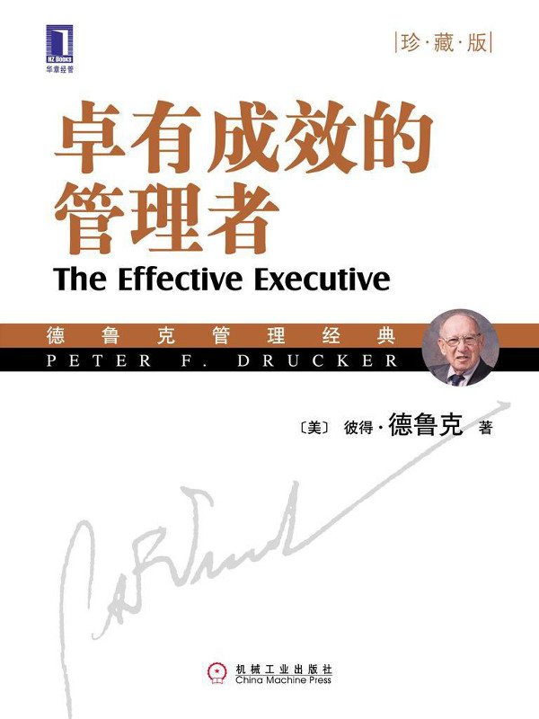

注：【】部分为笔者心得，非原文摘抄。
- 一个人的才能，只有通过有条理、有系统的工作，才有可能产生效益。
- 知识工作者本人必须自己管理自己，自觉地完成任务，自觉地做出贡献，自觉地追求工作效益。
- 一个组织要产生一项既定成果，其工作量越少，表示其成绩越好。
- 一个管理者，如果不能有意识地努力去观察外部世界，则组织内部的事物必将蒙蔽他们使他们看不见真正的现实。
- 只有通过改进工作的手段来充分发挥人的能力，而不应该期望人的能力突然提高。
- 要成为一个卓有成效的管理者，必须在思想上养成的习惯：
- 知道时间用在什么地方；
- 重视对外界的贡献；
- 善于利用长处，包括自己、上司、同事和下属的长处；
- 集中精力于少数重要的领域；
- 善于做有效的决策。
- 管理者有效性的基础
- 记录时间；
- 管理时间；
- 统一安排时间。
- 最稀缺的资源，就是时间。
- 知识工作者要想取得成果和绩效，就必须着眼于整个组织的成果和绩效。
- 用脚走不通的路，用头可以走得通。——斯拉夫谚语
- 把可由别人做的事情交付给别人，这样才能做真正应由自己做的事。
- 大刀阔斧减少不必要的工作，绝不会有太大的风险。
- 同一个危机如果重复出现，往往是疏忽和懒散造成的。
- 如果一个高级管理人员，尤其是经理，不得不将他工作时间的 1/10 花在处理所谓“人际关系问题”上，花在处理纠纷和摩擦上，花在处理争执和合作等等问题上，那么这个单位就算人数过多了。
- 一个管理者花费在会议上的时间如果过多，便是组织不健全的表现。
- 原则上，一个管理者的时间，绝不能让开会占用太多。
- 重视贡献是有效性的关键。所谓有效性，表现在以下三个方面：（1）自己的工作，包括工作内容、工作水准及其影响；（2）自己与他人的关系，包括对上司、同事和下属；（3）各项管理手段的运用，例如会议或报告等。
- 重视贡献，才能使管理者的注意力不为其本身的专长所限，不为其本身的技术所限，不为其本身所属的部门所限，才能看到整体的绩效，同时也才能使他更加重视外部世界。
- 一般机构对成效的要求往往表现在以下三个方面：直接成果；树立新的价值观及对这些价值观的重新确认；培养与开发明天所需要的人才。
- 管理者的失败，因素很多。常见的原因，应该是他本人在出任一项新职位时，不能或不愿为适应新职位的需要而改变。自以为过去做得成功了，因此满足于自己老一套的工作方法，结果必然遭到失败。
- 在一个组织中，自认为有管理天赋的管理者，往往并没有良好的人际关系。
- 在自己的工作上和人际关系上都比较重视贡献的管理者，往往都有良好的人际关系，他的工作也因此而富有成效，这也许是所谓“良好的人际关系”的真义所在。
- 有效的人际关系，有下列四项基本要求：
- 互相沟通；
- 团队合作；
- 自我发展；
- 培养他人。
- 充分发挥人的长处，是组织存在的唯一目的。
- 管理者的任务，就是要充分运用每一个人的长处，共同完成任务。
- 一位管理者如果仅能见人之短而不能识人之长，因而刻意避其所短，而非着眼于发挥其所长，则这位管理者本身就是一位弱者。
- 人事的决策，要凭公平和公正，否则就会赶走好人，或破坏好人的干劲。
- 卓有成效的管理者用人的四个原则：
- 不将职位设计成只有上帝才能胜任；
- 职位的要求要严格，涵盖要广；
- 在用人时，先考虑某人能做些什么，而不是先考虑职位的要求是什么；
- 在用人之所长的同时，必须容忍人之所短。
- 一个职位，如果先后由两人或三人担任都失败了，这就肯定是一个常人无法胜任的职位，这个职位就必须重新设计。
- 只有“让平凡人都能做出不平凡的事”的组织，才是好的组织。
- 合理的职位，应该是对具有才干的人的挑战。
- 知识工作者是否适合某一职位，只有靠实际的工作绩效才能印证。
- 凡是最能充分发挥其长处，而且最受到挑战的人，他的工作肯定最起劲，也肯定最能有所成就。
- 面谈考评是一件最令上级感到难堪的工作。
- 正直的品格本身并不一定能成就什么，但是一个人如果缺乏正直和诚实，则足以败事。有这种缺点的人，没有资格做管理者。
- 要说人的能力，就必须具体到能不能完成任务。
- 只有经得起绩效考验的人，才是可以提升的人。这应该是一条用人的铁律。
- 运用上司的长处，也是下属工作卓有成效的关键。
- 要使上司能发挥其所长，不能靠唯命是从，应该从正确的事情着手，并以上司能够接受的方式向其提出建议。
- 有效的管理者会顺应自己的个性特点，不会勉强自己。
- 人的性情往往是事情成败的重大关键。
- 有效的管理者，把每一个人都视为可以开发的机会，包括他本人在内。
- 管理者的任务就是要让各人的才智、健康以及灵感得到充分发挥，从而使组织的整体效益得到成倍的增长。
- 卓有成效的秘诀就是善于集中精力。
- 一次只做好一件事。
- 要有效地利用人类的才能，最好的办法，莫过于集中个人所有的才能于一件要务上。
- 一次只做好一件工作，恰恰就是加快工作速度的最佳办法。
- 管理者专心一志，第一项原则是要摆脱已经不再有价值的过去。
- 【不要留恋沉没成本。】
- 社会组织恰如生物有机体，必须保持小而精的状态。
- 要准备克服重大困难的手段，唯一靠得住的办法只有靠最有才干的人来主持。
- 帮助确定优先次序的重要原则：
- 重将来而不重过去；
- 重视机会，不能只看到困难；
- 选择自己的方向，而不盲从；
- 目标要高，要有新意，不能只求安全和方便。
- 一个垄断性的企业如果没有竞争力，就很容易变得刻板和僵化起来，无法适应变化，无法谋求自身的发展。
- 一个垄断性的企业虽然没有对手，但是应该以将来作为对手。
- 一个大型企业，需要有一个统一方向和一个管制中心；需要有责权的高层管理；也需要积极进取和干练的业务经理，他们应该有选择其经营方法的自由，应该有确切的责任和履行其责任的职权，应该有足以使他们发挥所长的范围，应该使他们的成就得到应得的鼓励。
- “一知半解”有时比“全然不知”更为可怕。
- 所谓最危险的决策，就是勉强可行的决策，唯有在一切顺利的情况下，才可能达成的决策。
- 如果管理者老坐在办公室，不到工作现场，他和实际情形必将越来越脱节。
- 唯有在多项方案中，我们需凭借深入研究判断才能有所决定时，才称之为判断。
- 如果没有考虑每一个可能的方案，就是偏颇。
- 好的决策，应以互相冲突的意见为基础，从不同的观点和不同的判断中选择。
- 为什么该有反面意见，主要有三项理由：
- 唯有反面意见，才能保护决策者不致沦为组织的俘虏；
- 反面意见本身，正是决策所需的“另一方案”；
- 反面意见可以激发想象力。
- 如果利益远大于成本及风险，就该行动。
- 管理者的自我提高往往要比卓有成效的训练更为重要。管理者必须增进其知识与技巧，必须养成各种新的工作习惯，同时也必须放弃过时的工作习惯。